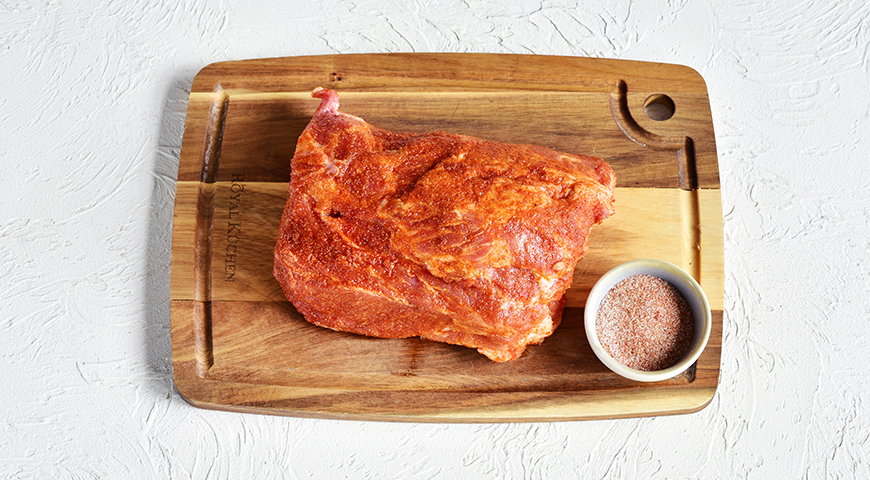
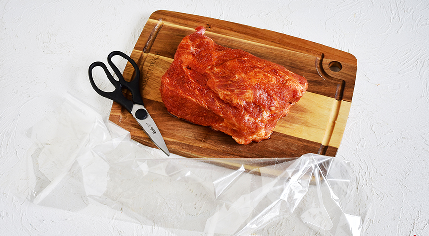
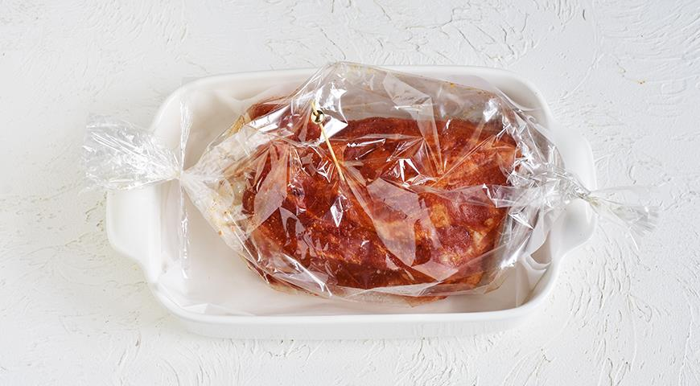
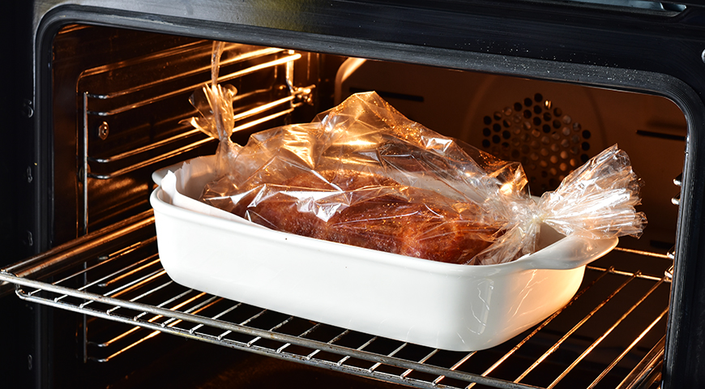

1,5 кг свиной шеи одним куском 1 ст. л. сладкой молотой парики, 10 г 1 ст. л. смеси специй для плова, 10 г 1 ч. л. сухого молотого чеснока, по желанию 1 ст. л. сахара 15 г 1 ст. л. соли, 15 г
Шаг 1
Для приготовления свинины в рукаве целиком смешайте все специи и руками вотрите их в поверхность мяса со всех сторон. Дайте мясу полежать при комнатной температуре, ничем не закрывая его, 30 мин. 
Шаг 2Разогрейте духовку до 190 °С в режиме «верх-низ», без конвекции. Застелите противень бумагой для выпечки (на всякий случай). Подготовьте пакет для запекания: отмотайте от рулона пленку той же длины, что ваш кусок мяса, + еще 18–20 см, по 9–10 см с каждой стороны на закрепление клипсами.
 Шаг 3Захватите один край пакета клипсой. Положите мясо в пакет и закрепите открытый край второй клипсой. Положите пакет на подготовленный противень так, чтобы сторона пакета, в которой есть крошечные отверстия, оказалась сверху – иначе под воздействием пара пакет лопнет. Если отверстий нет, проделайте их самостоятельно иголкой или зубочисткой. 
Шаг 4Поставьте противень в центр духовки. Через 10 мин. убавьте температуру до 170 °С, запекайте 1 ч.
 Шаг 5Вытащите свинину в рукаве на противне из духовки. Очень осторожно, чтобы не обжечься паром, разрежьте пакет сверху по центру и немного раздвиньте края. Верните мясо в духовку на 10 мин. – за это время оно допечется, и образуется румяная корочка. Перед разрезанием дайте мясу постоять 7–10 мин.